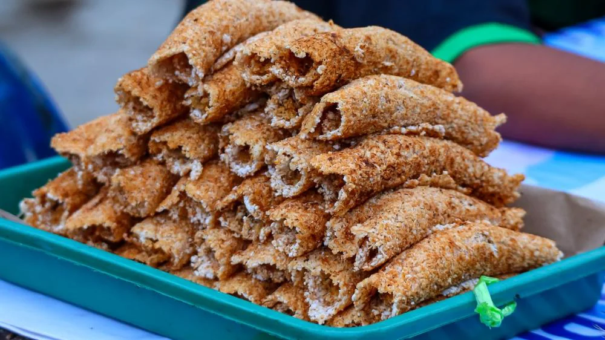

Papeda
makanan khas dari Kepulauan Maluku dan pesisir barat Papua yang terbuat dari sagu dan dimasak hingga membentuk bubur kenyal berwarna putih. Hidangan ini umumnya disantap dengan ikan kuah kuning, ikan bakar, atau lauk lainnya, dan sering dianggap sebagai pengganti nasi di daerah asalnya. Papeda juga dikenal sebagai makanan kaya serat dan memiliki makna budaya penting bagi masyarakat lokal. Pada umumnya, papeda dikonsumsi bersama dengan ikan tongkol. Namun, papeda dapat juga dikombinasikan dengan ikan kakap merah, bubara. Selain ikan kuah kuning, papeda juga dapat dinikmati dengan sayur ganemo yang diolah dari daun melinjo muda yang ditumis dengan bunga pepaya muda dan cabai merah.
📍lokasi:

Ikan Bakar Manokwari
Ikan Bakar Manokwari adalah hidangan khas dari Papua Barat yang terkenal dengan cita rasa pedas dan segar, disajikan dengan sambal khas Manokwari yang terbuat dari cabai rawit dan bahan-bahan segar lainnya. Hidangan ini biasanya menggunakan ikan bongkol atau ikan tongkol segar sebagai bahan utama. Ikan Bakar Pedas Manokwari berasa gurih dan pedas, dengan sentuhan rasa laut yang segar. Bumbu-bumbu seperti bawang merah, bawang putih, kemiri, kunyit, jahe, cabai, dan sedikit garam memberikan cita rasa yang kaya dan kompleks
Bahan-Bahan
Bahan utama dari Ikan Bakar Pedas Manokwari adalah ikan laut segar, seperti ikan kakap merah atau ikan kuwe. Bumbu khasnya terdiri dari cabai rawit merah, bawang merah, bawang putih, tomat, jeruk nipis, garam, dan minyak kelapa. Semua bahan dihaluskan untuk kemudian dilumurkan pada ikan sebelum dipanggang.
Filosofi
Ikan Bakar Pedas Manokwari mencerminkan budaya masyarakat Papua Barat Daya yang hidup selaras dengan alam, khususnya laut. Hidangan ini juga melambangkan kebersamaan, karena sering disajikan dalam acara keluarga atau perayaan tradisional. Rasa pedasnya dianggap sebagai simbol semangat dan keberanian masyarakat Manokwari dalam menghadapi tantangan.
📍lokasi:

Sagu Kelapa
"Sagu kelapa Papua" merujuk pada berbagai olahan sagu yang dicampur dengan kelapa parut, seperti Sagu Sep dan Sinole. Sagu Sep adalah makanan tradisional suku Marind yang dibungkus daun pisang dan dibakar, sementara Sinole adalah olahan sagu dan kelapa yang disangrai. Keduanya memiliki cita rasa gurih yang khas dan merupakan warisan kuliner Papua.
📍lokasi: